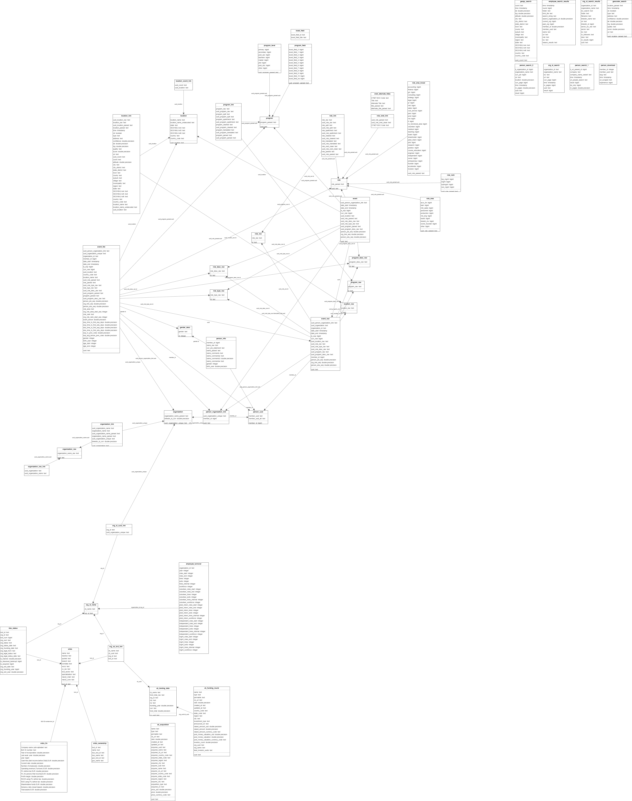

1. The be_founders-employees database
1.1. Data
The database has rich microdata about a large number (99k+) of people who worked for a set of Belgian start-ups (see Section 1.2 for information on the start-ups). The database includes nearly all the employees that worked for these start-ups, as well as the founders.
The data source is a well-known employment-focused social media platform (henceforth WEFP), where all the data is publicly-available. WEFP has two types of users: real persons and corporate persons.
WEFP users who are real persons create a personal page where they share personal details, educational background and employment history. WEFP users who are corporate persons create a business page for their company, school, NGO, etc. Users of both types share posts, pictures, videos, and documents; and engage with other WEFP users in public, as well as private, interactions.
We relied on mechanized search tools (a.k.a. scrapers or web bots) to retrieve information from users’ profiles. Additionally, we used machine learning tools to parse the data and derive indicators at the person- and start-up-level. At the employee-level, the database contains information on three main areas:
- Individual characteristics:
Name
Gender
Age (etc.)
- Education history:
Educational institution
Study program
Start/end date
Location
- Work experience:
Employer
Job title
Start/end date of the position
Location
At the start-up-level, the database contains rich information about personnel dynamics (e.g., employee entry and exit, internal promotions, etc.).
Antecedent: The be_founders database
The be_founders database contains rich microdata about the founders of a large set of Belgian start-ups. This includes the founders’ education and work experience, but also networks and co-founding links. The database includes start-ups’ financial information as well.
Refer to the documentation of the be_founders project for more information.
1.2. Sample
We built the sample in several steps:
We retrieved a list of all Belgian start-ups listed in Crunchbase.
We ran a mechanized search process to look up the start-ups in WEFP and obtain their WEFP unique identifier (uuid).
We ran mechanized searches in WEFP to identify users who worked in at least one of the start-ups (either who worked in the past, or were working at the time of data collection, between April and December 2022).
We retrieved data about the users found in step three, which is publicly available in WEFP; this includes, but is not limited to, work- and education-background data.
We carefully parsed, cleaned, disambiguated, and structured the data obtained in step four, in order to build the employees’ complete career and educational trajectories. This way we identified thousands of events in the life of the employees.
We used event data to build data at the start-up level.
The resulting database includes the work and study careers of 99,432 employees, who worked for 910 Belgian start-ups. It comprises 997k events, divided into 246k study events and 751k job market events.
Events
We define an event as a spell, or period, in the life of an employee during which she works or studies. There are two types of events:
Work event (includes start/end time, employer, location, role, area/field, hierarchy, etc.)
Study event (includes start/end time, education institution, degree type, area/field, etc.)
We use events within and between employees and start-ups to create indicators about career advance, skills, networks, job creation, etc.
The total (i.e., added) duration of the work event spells is 1,738,000 years (or about 18 years per person, on average). The total duration of the study events is 587k years (or about 6 years per person, on average).
Start-up work vs non-start-up work
Start-up employment represents only 17% (133k) of the job market events (or about 20% of the recorded employment time) in the database. This suggests that working for start-ups is but a phase in the lives of the typical individual in the database, and there is great potential from using data phase. This is what we set out to do by collecting career and education background data.
1.3. Database structure and contents
We developed the database using Python and PostgreSQL, and release it as a db dump in a single .tar file. The database that we release has four schemas:
raw: contains tables with raw (i.e., unprocessed) data that we extracted from the html files obtained by the web scrapers (e.g., raw company names, or job titles)
log: contains logs of the search and download steps (e.g., URL’s, time, etc.)
main: contains tables with parsed event data (e.g., events, job titles, education programs, locations, etc.)
public: contains tables with information we generated with data from the main schema (e.g., start-up employee turnover) as well as data from other sources (e.g., O*NET job titles, Orbis’ company financials)
Each schema contains tables, and tables are linked to each other by a system of foreign keys. A description of the tables and their contents is given in Section 4.
1.4. Database diagram
Click on the figure below to expand the database diagram.
{kind=link}